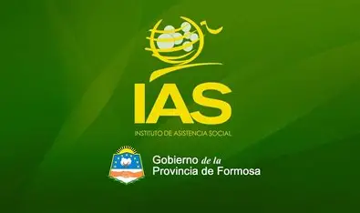

El IAS (organismo de control de juegos de azar con responsabilidad social) El Instituto de Asistencia Social (IAS) es un organismo estatal encargado de administrar y supervisar las actividades de juegos de azar en la provincia de Formosa, Argentina. Su objetivo principal es regular y controlar las loterías, casinos y otras formas de entretenimiento con fines de lucro , garantizando que las operaciones se realicen de manera transparente y en beneficio de la comunidad.
